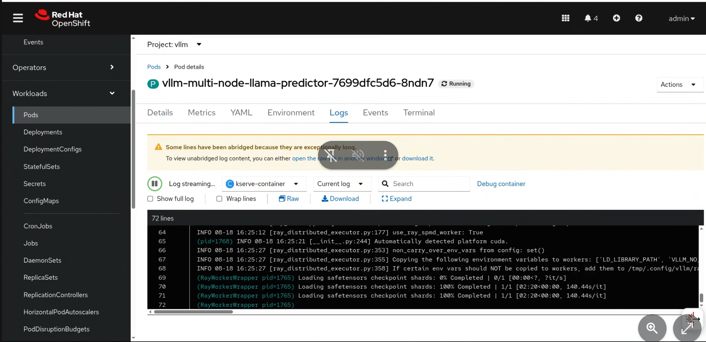
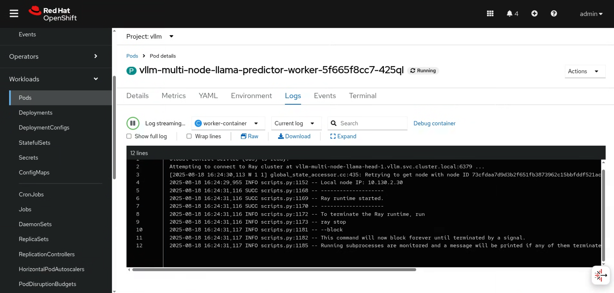

Deploying a Model with vLLM on a multiple node with multiple GPUs
We have successfully deployed vLLM on a single node with multiple GPUs, the natural next step is going to deploy a vLLM instance over multiple nodes with multiple GPUs.
Multi-node vLLM Overview
Multi-node vLLM is a powerful tool for deploying larger models that won’t fit on the GPUs available in a single node.
For example, a node with 8x H100 (80Gb vRAM each) has a total of 640Gb of vRAM. An un-quantized version of Llama 405b requires approximately 900Gb of vRAM just to load the model (not factoring in the KV Cache requirements) so the model must be broken up across multiple nodes.
Multi-node vLLM enables us to start multiple pods with a head node and additional worker nodes. The head will act as the main vLLM server, and both the model and KV Cache will be distributed across the nodes.
Multi-node instances do not have all of the same capabilities as a single node instance. For example, multi-node instances are only available as Standard (aka RawDeployment) and not Advanced (aka Serverless). Additionally, multi-node instances only support serving models from a ReadWriteMany (RWX) PVC or a ModelCar image. They do not support serving models directly from an S3 bucket.
Lab: Deploying a Multi-node vLLM Instance
In this section we will deploy a multi-node vLLM instance with two nodes, each with two GPUs.
For this lab, we will continue to use the vllm namespace.
|
Multi-node vLLM is a Tech Preview feature and is not supported in the OpenShift AI Dashboard. For this lab, we will be deploying the vLLM instance using the CLI. |
|
Refer to the official documentation for more information on how to deploy a multi-node vLLM instance: https://docs.redhat.com/en/documentation/red_hat_openshift_ai_self-managed/2.22/html-single/serving_models/index#deploying-models-using-multiple-gpu-nodes_serving-large-models |
-
To start, we need to process and deploy a template from the
redhat-ods-applicationsoc process vllm-multinode-runtime-template -n redhat-ods-applications | oc apply -n vllm -f -
|
The OpenShift AI Dashboard provides several out of the box "Serving Runtimes" for different models servers. These can be found in the "Serving Runtimes" section in the OpenShift AI Dashboard under "Settings" if you are an Admin. These "Serving Runtimes" are OpenShift Templates similar to the one we use above. These templates container a copy of a |
-
Processing the template will create a
ServingRuntimeobject in thevllmnamespace calledvllm-multinode-runtime. Take a moment and explore the ServingRuntime to see what it contains:oc get servingruntime vllm-multinode-runtime -n vllm -o yamlAs of 2.22 the
ServingRuntimeobject must be namedvllm-multinode-runtimein order for the odh-model-controller to automatically setup the Ray TLS certs needed for multi-node deployments. In newer versions of RHOAI any name can be used for the model server. -
We have already created a ReadWriteMany (RWX) PVC for the model in the
vllmnamespace and loaded Llama-3.3-70B-Instruct-quantized.w4a16 into it. Take a moment to review the PVC:oc get pvc llama-model -n vllm oc describe pvc llama-model -n vllmMulti-node vLLM supports both
ReadWriteManyPVCs and ModelCar images for serving. S3 buckets are not supported for multi-node deployments.ReadWriteOnce PVCs are not supported for multi-node deployments since the PVC must be mounted to both the
headandworkerpods.In a real world scenario, you will need to create the PVC and download a copy of the model to the PVC. The way you copy the model will likely depend on the environment you are working in and what you have access to.
If the model is already available on an S3 instance like in our cluster, you may wish to use a Job similar to the one that was already executed in your cluster to download the model to the PVC. Alternatively, you could create a job that copies the model directly from HuggingFace to the PVC if you have access to HuggingFace from your cluster. In some cases it may be easier to mount the PVC to a Workbench and copy the model to the PVC from the Workbench.
-
Next, we will need to create the
InferenceServiceobject that will be used to serve the model. Copy the following YAML into a file and create it on the cluster usingoc applyor copy and paste it into the OpenShift Web Console using the+button in the top right corner of the screen.apiVersion: serving.kserve.io/v1beta1 kind: InferenceService metadata: annotations: serving.kserve.io/autoscalerClass: external serving.kserve.io/deploymentMode: RawDeployment # 1 labels: networking.kserve.io/visibility: exposed # 2 name: vllm-multi-node-llama namespace: vllm spec: predictor: minReplicas: 1 model: args: # 3 - --max-model-len=100000 modelFormat: name: vLLM name: "" resources: limits: cpu: "8" memory: 12Gi nvidia.com/gpu: "2" requests: cpu: "4" memory: 8Gi nvidia.com/gpu: "2" runtime: vllm-multinode-runtime storageUri: pvc://llama-model/Llama-3.3-70B-Instruct-quantized.w4a16 # 4 tolerations: - effect: NoSchedule key: nvidia.com/gpu operator: Exists workerSpec: containers: - name: worker-container resources: limits: cpu: "8" memory: 12Gi nvidia.com/gpu: "2" requests: cpu: "4" memory: 8Gi nvidia.com/gpu: "2" pipelineParallelSize: 2 # 5 tensorParallelSize: 2 # 6 tolerations: - effect: NoSchedule key: nvidia.com/gpu operator: Exists-
Multi-node vLLM is only available as
RawDeploymentmode and notServerlessmode. -
The
exposedlabel tells KServe to create a Route to expose the model outside of the cluster. -
The
argssection is used to set additional arguments needed to help start the model. In our case, we are limiting the sizing of the KV Cache to 100,000 tokens to allow it to fit on the GPUs in our multi-node setup. -
The
storageUrisection is used to provide details of where our model exists. In this case our pvc is namedllama-modeland the folder container the model isLlama-3.3-70B-Instruct-quantized.w4a16. -
The
pipelineParallelSizesection is used to set the number worker pods that will be created to serve the model. -
The
tensorParallelSizesection is used to define the number of GPUs available to each worker pod.
-
-
Once the
InferenceServiceis created, we can see the two new pods that have been created. Thevllm-multi-node-llama-predictor-head-<hash>pod is theheadnode and thevllm-multi-node-llama-predictor-worker-<hash>pod is theworkernode.oc get pods -n vllmAlternatively, you can use the
watchcommand or flag to follow the status of the pods.watch oc get pods -n vllmor
oc get pods -n vllm --watch -
Check the logs of both the
headandworkerpods. You should see araycluster starting in theheadpod followed by some logs from vllm starting up. In theworkeryou will see a therayinstance starting and the worker pod will join the cluster.Head logs:
Worker logs:
The multi-node vLLM instance uses Ray as part of the backend to manage the communication between the pods. vLLM is responsible for managing our Ray cluster for us as part of the deployment and it does not use any of OpenShift AI’s Distributed Compute capabilities with CodeFlare and KubeRay.
Additionally, the multi-node vLLM should not be confused with Ray Serve, which is a ray based serving framework for predictive models.
Lab: Testing the Multi-node vLLM Instance
-
Once all of our pods have gone to a fully
Readystate, we can test the model by sending a request to theheadpod’s endpoint. We can do this by using thecurlcommand to send a request to theheadpod’s endpoint. First, we will get the route for the vllm endpoint.oc get route vllm-multi-node-llama -n vllm -o jsonpath='{.spec.host}' -
Next we will use the route URL to perform a curl request to get the name of the model form the models endpoint.
curl https://vllm-multi-node-llama-vllm.{openshift_cluster_ingress_domain}/v1/models -
Next, we can use curl to send a prompt to the model. We will use the
-doption to send a JSON payload to the model.curl -X 'POST' 'https://vllm-multi-node-llama-vllm.{openshift_cluster_ingress_domain}/v1/chat/completions' \ -H 'accept: application/json' \ -H 'Content-Type: application/json' \ -d '{ "model": "vllm-multi-node-llama", "messages":[ { "role": "system", "content": "You'\''re an helpful assistant." }, { "role": "user", "content": "Write a function in Python that determines if a number is prime. Explain your approach. Follow the PEP 8 style guide." } ], "max_tokens": 100 }'If you are working with a model that has a secured endpoint, you can add the
Authorizationheader to the curl request.-H "Authorization: Bearer <YOUR_TOKEN>"You can generate a token through the OpenShift AI Dashboard, or use any user/sevice account token that has view permissions on the
InferenceServiceobject.To get your OpenShift user token, you can use the following command:
oc whoami --show-token